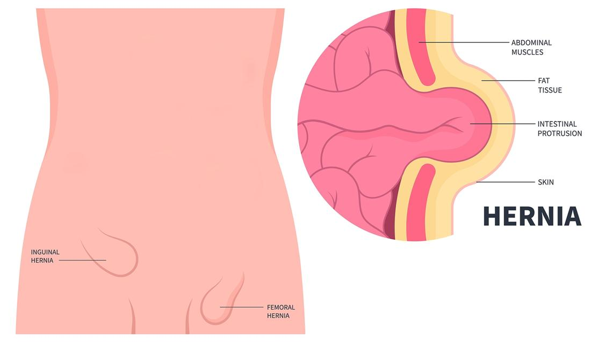

A groin hernia happens when tissue, such as part of the intestine, bulges through a weak spot in your lower belly or groin. This can cause pain, a bulge, or pressure.
TAPP hernia repair is a type of laparoscopic surgery used to fix the hernia. Laparoscopic means the care team uses small tools with a camera inserted through small cuts in the belly. With these tools, they fix the hernia and then place a mesh patch over the weak spot. This helps stop the bulge and keeps it from coming back.
TAPP stands for transabdominal preperitoneal. That is because it is done through a cut in the peritoneum, a membrane that covers the abdomen’s organs. This surgery is done under general anesthesia, which means the patient is asleep.

This surgery is safe for most people. Like all procedures, it has some risks:
Bleeding or infection
Pain near the groin or belly
Trouble urinating
Return of the hernia
Injury to nearby organs or blood vessels
Severe problems after a TAPP hernia repair do not happen often, but your care team will watch closely to help keep you safe.
You may be asked not to eat or drink for several hours before surgery.
Your care team will ask about your health history and medicines.
You may need to stop blood thinners or certain medicines.
Arrange for someone to drive you home after surgery.
You get medicine to help you sleep and feel no pain during surgery.
A small tube is placed in your vein for fluids and medicine.
The surgeon makes 3 to 4 small cuts in your belly.
The surgeon uses a camera and tools to move the hernia back into place.
A soft mesh patch is placed over the weak spot to support the area.
The cuts are closed with stitches or surgical glue.
You will rest in a recovery area until you are fully awake.
You may feel sore or bloated for a few days.
Most people go home the same day.
You will need to care for the incisions and may have a small bandage.
Most people return to regular activity in 1 to 2 weeks, but heavy lifting should wait 4 to 6 weeks.
It is normal to feel nervous or uncertain before surgery. Many people feel unsure about having the mesh placed in their abdomen or worry about pain. Please know that your care team will be with you before, during, and after the surgery. You are not alone. It is OK to ask questions and express how you feel.
How long will my recovery take?
What kind of pain should I expect?
When can I return to work, exercise, or lift things?
Will I need to see a specialist again?
What happens if the hernia comes back?
Contact your care team with any questions or concerns. We want you to feel comfortable with your health decisions.
Call your care team if you have:
Fever of 100.4°F or 38°C or higher, or chills
Redness, warmth, swelling, or pain around your incision that gets worse or does not go away
Pus or yellow or green drainage coming from your incision
Pain that gets worse, does not improve with medicine, or spreads to your belly or groin
A lump, swelling, or bruise at the surgery site that gets bigger or is very painful
Trouble urinating or cannot pass urine
Any questions or concerns about your symptoms or recovery
Get help right away if you have:
Severe trouble breathing, chest pain, or you cannot catch your breath
Heavy bleeding that does not stop, or your bandage is soaked with bright red blood
Loss of consciousness, fainting, or you cannot wake up
Sudden, severe pain in your belly or groin that does not go away
Signs of a severe allergic reaction, such as swelling of your face, lips, tongue, or throat, trouble breathing, or a sudden full-body rash
Leg pain, swelling, redness, or warmth, especially in your calf or thigh, which could be a blood clot
Thank you for trusting us with your care. We are here to support you and want you to feel your best. Contact us with any questions.
IF YOU HAVE A MEDICAL EMERGENCY, CALL 911 OR GO TO THE EMERGENCY ROOM.
The information presented is intended for general information and educational purposes. It is not intended to replace the advice of your health care provider. Contact your health care provider if you believe you have a health problem.
Last updated May 2025
© 2025 Mytonomy, Inc. All rights reserved.